Project Name: D&D Beyond: Learn to Play
Project Year: 2018
Project Type: Personal Project (redesign). The original project was done in a senior user experience design course.
D&D Beyond: Learn to Play is an e-learning extension of the existing D&D (Dungeons & Dragons) Beyond mobile application, aimed to provide a more personal and engaging learning experience for newcomers to D&D through interactive and immersive lessons relevant to their interests.
Upon opening the app for the first time, a new user is presented with a screen about what the app offers for learning the basics of D&D. Proceeding with the D&D knowledge assessment allows the app to determine which types of information about D&D may be relevant to their learning interests, as newcomers can still have varying levels of D&D, or roleplaying, knowledge. All of the screens shown below are the outcome of my redesign when I revisted this project.

The app displays a lessons dashboard after the user finishes the assessment, where lessons relevant to their interests are highlighted. When tapping on a lesson, the user is given a quick breakdown about specific rules and mechanics of D&D that will be taught in that lesson, as well as two paths to learning the lesson. 66% of 310 respondents of a survey created for this project are attracted to D&D due to roleplaying and storytelling, so one of the offered lesson paths ("Lesson Quest") uses narrative and immersive elements in order to create a more engaging and fun learning experience.
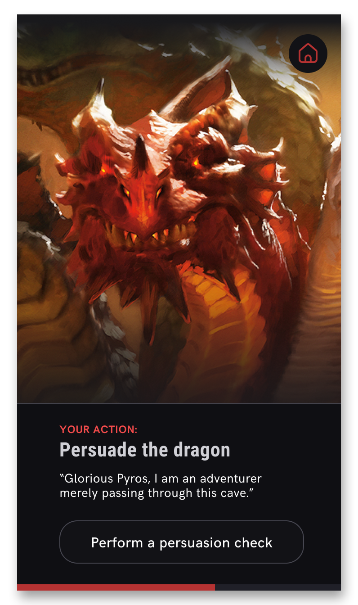
As D&D is centered around storytelling and making choices, the user will be able to make choices that affect the narrative of the game, to give them a taste of the impact they can have within D&D. These interactive "Lesson Quests" use language relevant to roleplayers, sound, and music to enhance immersion. Users can try what they have learned immediately in the Lesson Quest, without needing to read through many pages of text.
Another learning path is also available to the user from the lesson submenu, which is for the user to read through the subjects taught within the lesson. This path lets the user learn at their own pace, and in whichever order they want. It also provides the user with information that can be referred to again if they want to refresh their memory, and the bookmark feature (leveraged from the original app) gives the user a quick way to refer to information they've forgotten in the middle of an actual D&D game. An audio narration of each subject is also available via the sound player at the bottom of the screen, for those who prefer auditory learning.
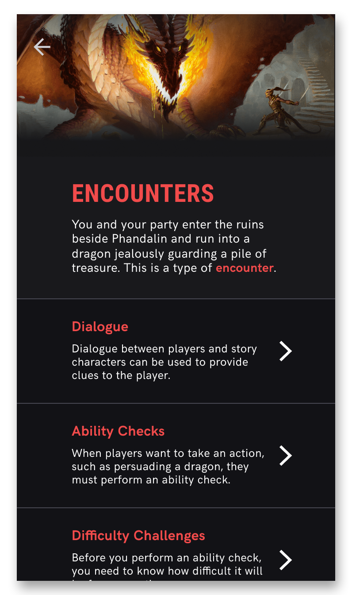
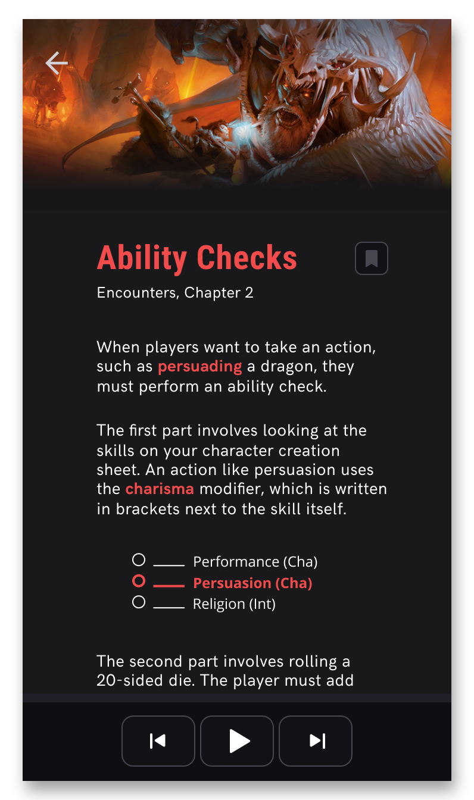
The main section of the D&D Beyond app is the Compendium, which is a collection of various D&D rulebooks, guidebooks, and modules. This section required a redesign, as the addition of "Learn to Play" made the D&D Beyond app more than just a collection of resources and books. I redesigned the Compendium to have a news hero carousel that would be regularly updated with new features, modules, and events in the world of D&D. The redesign also matches the new visual language of the app's "Learn to Play" section.
As the hero carousel uses a large amount of screen estate, the area will shrink to a smaller size as soon as the user pulls the screen to scroll down. I have also redesigned the side-menu with the addition of "Learn to Play". I chose a book as the menu icon rather than the conventional hamburger icon because the menu's content largely consists of D&D resources and information.
D&D, despite being a popular and fun team-building game, poses a higher barrier to entry due to the depth of rules players must learn. 40% of incoming players from 310 respondents found existing official resources on D&D websites and physical handbooks difficult to learn from due to complexity (pictured below), contributing to an overwhelming 87% of respondents to look for information on D&D from friends or game stores.
Why does this matter? D&D's publisher, Wizards of the Coast's business model relies on sales from updating existing editions of D&D, publishing new materials, and events. New consumers who do not, or rarely, engage with official D&D websites will be less likely exposed to these D&D offerings.
A survey, which received 310 respondents, was created and posted on various platforms including D&D Facebook groups, Reddit, D&D Discord servers, and D&D forums.
I crafted a persona from compiling information and finding trends within the user survey responses. The persona helped us identify who we were designing for and what kinds of goals and pains they might have when learning and playing D&D.

Creating a customer journey map helped my team better understand how a newcomer to D&D would encounter and learn about the game, as well as which stage of the journey would be most ideal to target with our solution. We identified that the area with most potential to be improved through design was the 'learning to play' stage, as newcomers expressed high resistance to the text-heavy and complicated official learning materials, preferring instead to have a friend teach them or watch player-made youtube videos. I recreated a more in-depth journey map below after revisiting this project.
The project's first iteration was an interactive storybook on the official D&D website, where the user could play through a standard tavern scenario that would occur in a real D&D game. The concept also centered around encouraging new players to be Dungeon Masters. We had made an assumption that new groups of friends who were interested in playing may have difficulties finding a Dungeon Master, and that there was a lack of onboarding for new players to become Dungeon Masters. I was responsible for information hierarchy, flow, and part of the UI.
However, once we conducted our more in-depth user survey of 310 participants, we discovered that there was a larger underlying issue of D&D resources being complicated and difficult for any new potential player to learn from. Simply learning the basics of the game was intimidating - let alone becoming a Dungeon Master! We decided to reorient our user to any newcomer to D&D, and change our focus to tackling the high barrier to entry resulting from a lack of effective onboarding for any new player, rather than just Dungeon Masters.
Empathy mapping in our design sprints helped us dive deeper into our user's head to find out what emotions and thoughts they were having when learning and playing D&D, as well as imagine how we could design to address these emotions and needs. Needs statements also helped us identify what kinds of needs and aspirations our user would have, so that we could design our solution with their aspirational goals in mind, rather than only addressing pains.
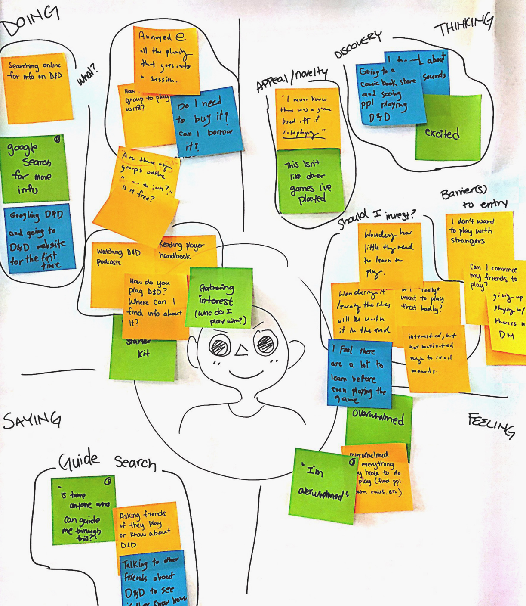 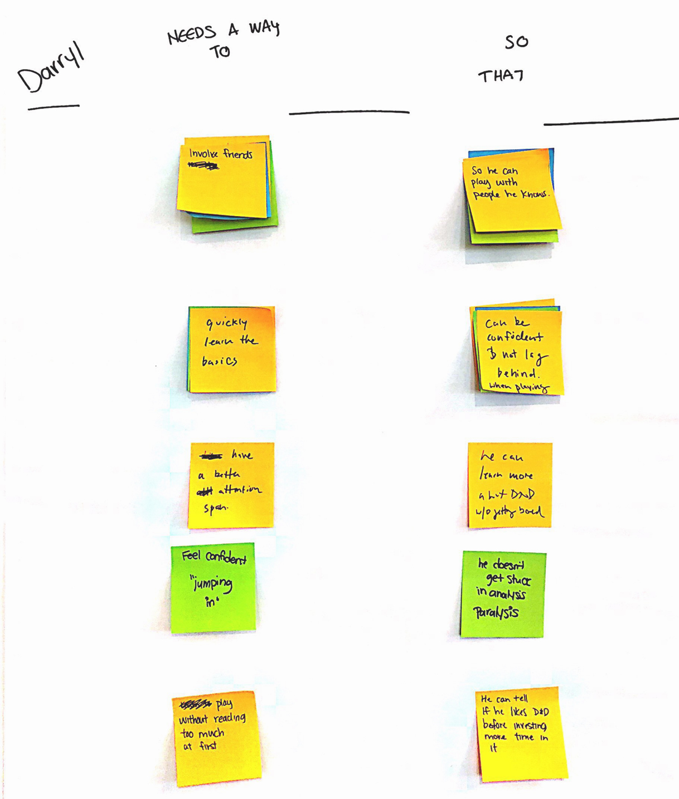Our new reframe of the original business opportunity, target user, and design sprint activities led my team and I to realize that the interactive storybook was linear, and not flexible enough for a newcomer to D&D to learn different aspects of the game at their own pace. However, the prototype had previously tested well, with the results shown below.
Since the previous concept was successful in how it built-up and revealed information to the user, as well as all users finding it engaging and immersive, we decided to build upon the concept to fit our new user's needs and goals. We retooled our design solution to a mobile application extension focused on lesson modules instead, where our narrative-based tavern scenario would live inside of a lesson module. As 53% of survey respondents learned D&D gameplay through an experienced friend, we chose to create a digital onboarding process that uses elements from learning through a friend, as well as an immersive learning experience that gives provides a "peek" into a D&D game.
During the final presentation of our project, we received positive feedback regarding our change from an interactive storybook to a mobile learning app, as well as our two branching pathways for learning. However, there was a large amount of feedback surrounding the user interface of the app, with most comments being that the brand of Dungeons & Dragons did not come across in our design. Several screens from my team's version of the app are shown below.
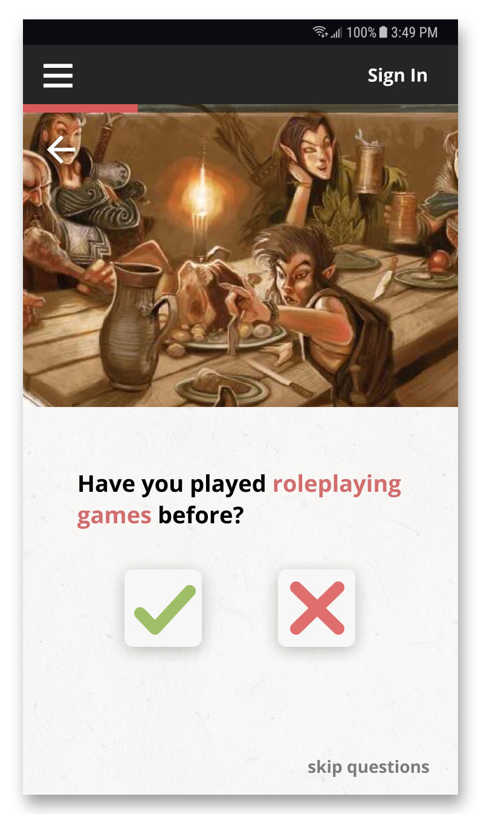 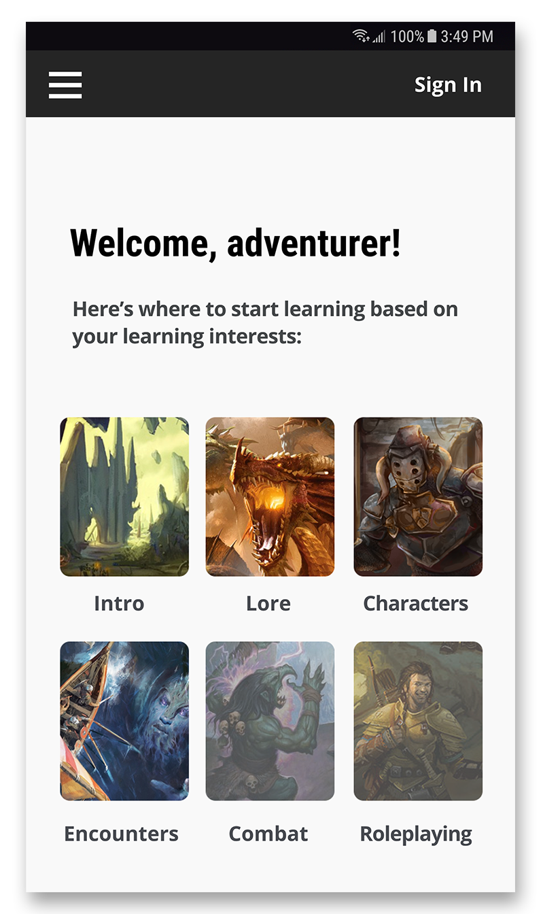 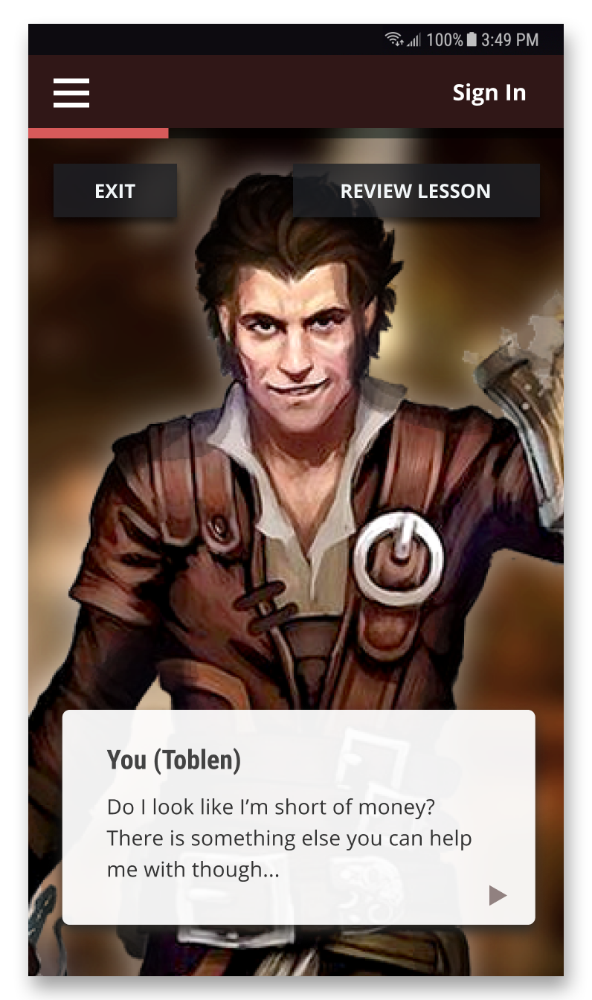When I revisted the project, I focused on redesigning the user interface to better capture the brand - and spirit - of D&D. D&D is an epic, fantasy, adventure game filled with raging battles and ventures into mysterious places, and these elements are already present in D&D's official artwork. I chose to use and put focus on these images by giving them more screen estate, and changed the background to a dark grey to convey a feeling of "venturing into the unknown". As D&D is associated with red, magic, and dragons, I used a shade of red similar to D&D's logo, along with a red dragon as the main image for Learn to Play, in order to emphasize D&D's brand throughout the app.
I also re-wrote several areas of copy to be more familiar and appealing to a D&D player by using common roleplaying game language. Many smaller changes have been made to enhance the user experience, such as adding an audio narration to the text-based learning path, as the app is intended to be used on-the-go and there may be difficulties in reading during transit.
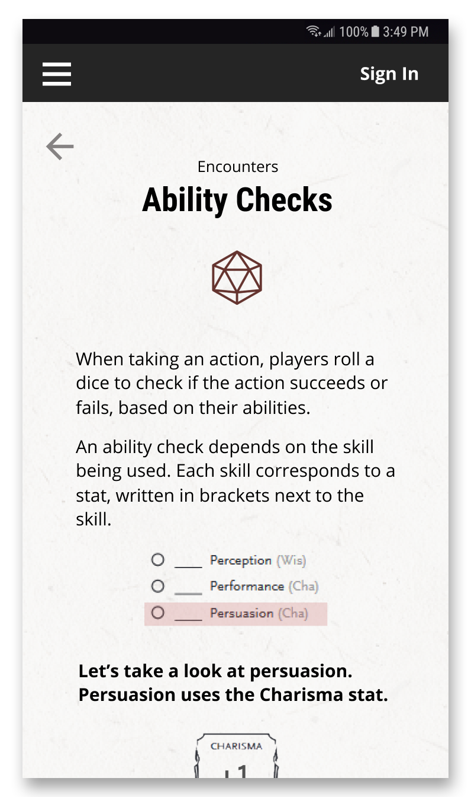I began my redesign by creating low-fidelity sketch and digital wireframes to block out information hierarchy, flow, and layout.
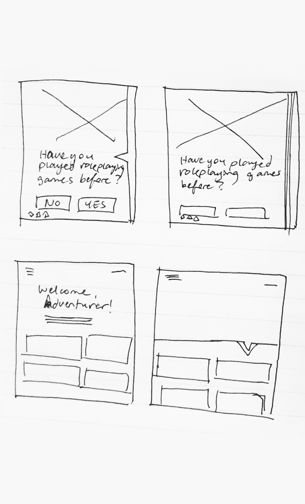 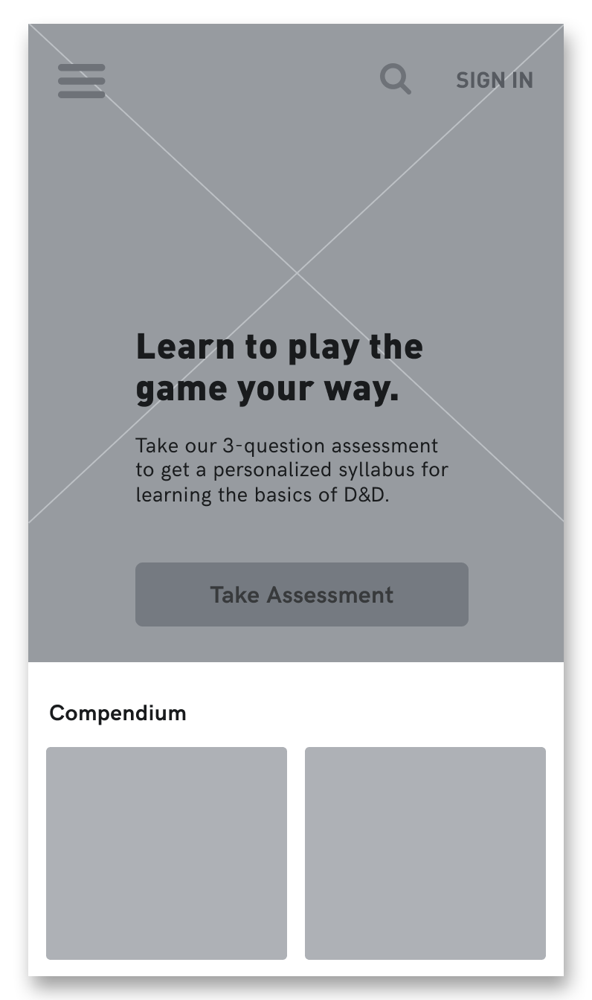 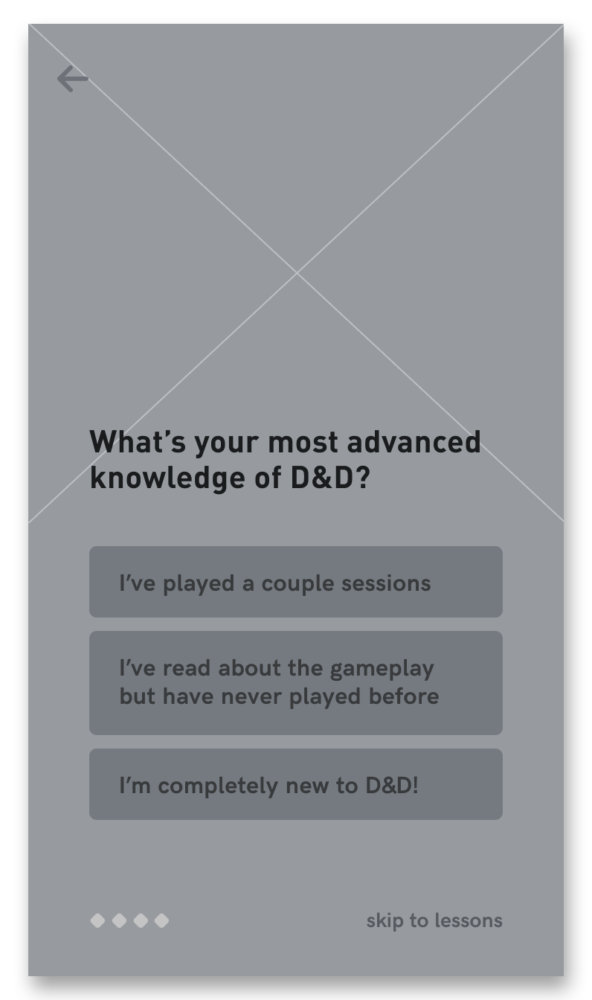 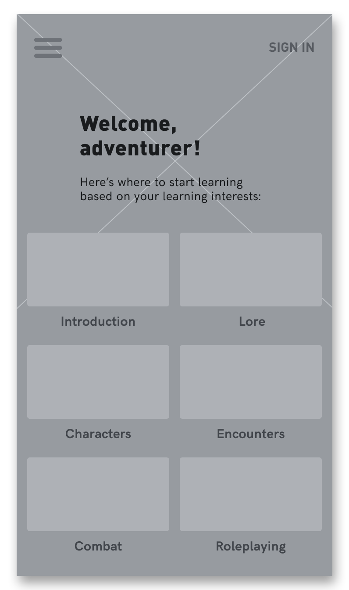I iterated on each screen to not only improve usability and visual hierarchy, but also until each screen successfully conveyed the "epic fantasy" feeling of D&D that makes the game and franchise exciting.
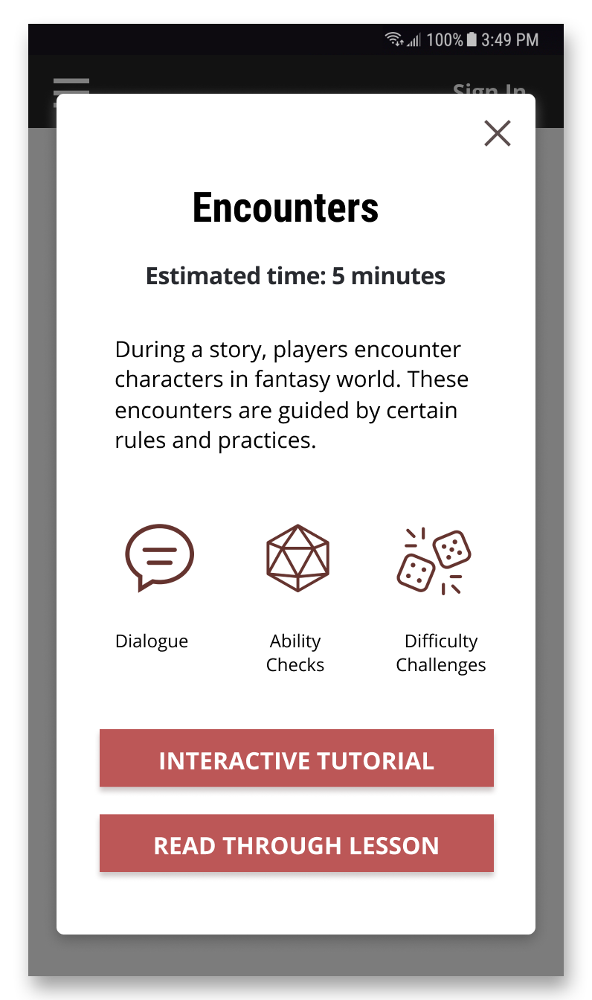 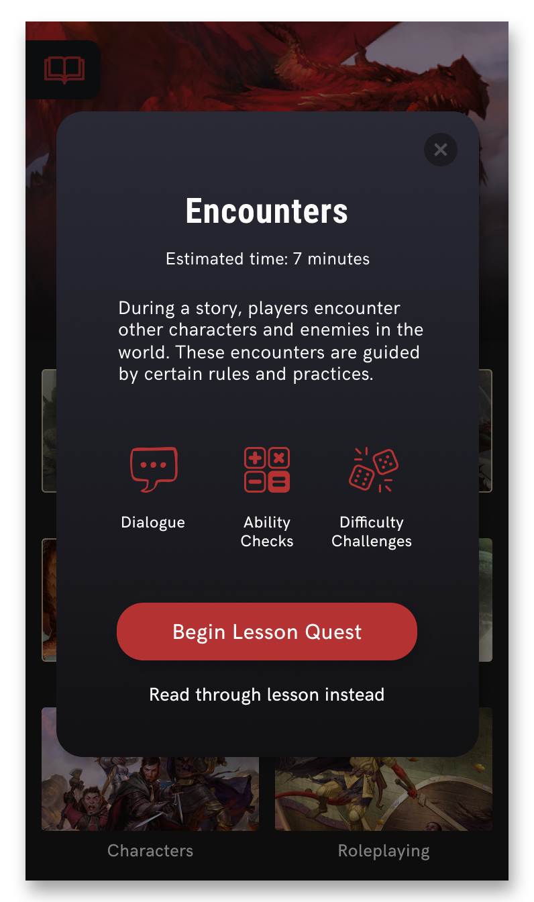 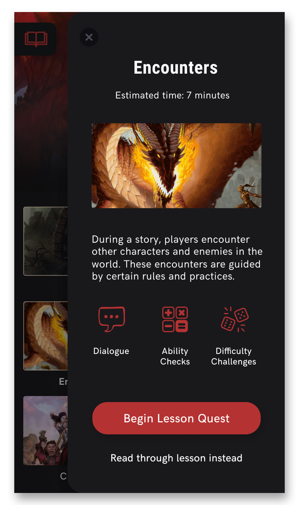 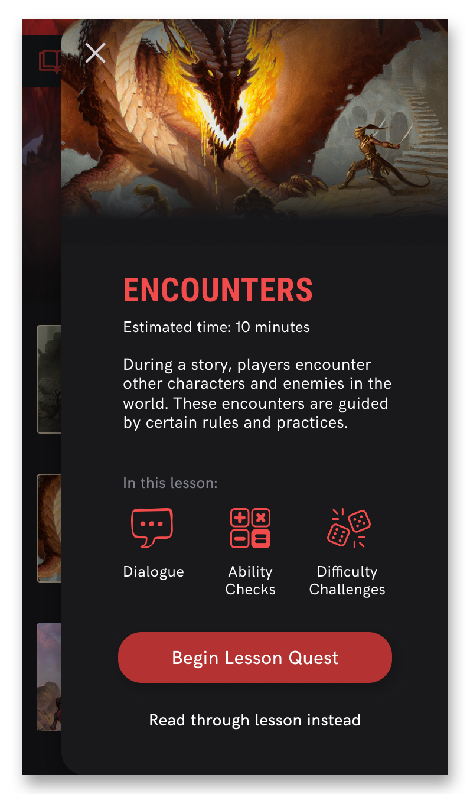My team's change in project direction to a mobile learning app extension allowed for more opportunities in enhancing the user's experience learning D&D, and also providing learning flexibility. I was a strong advocate in implementing the narrative-based, immersive scenarios into the lessons because they helped capture D&D's spirit and contained the elements of D&D that draw people's interest to the game.
If I were to take this project further, I would begin exploring ways to make this app more accessible during gameplay beyond the bookmarks feature, so that a D&D player can refer to it quickly and easily if they forget a rule.
Thanks for reading about my project! This project was created in a team of myself, Jessie Li, Emily Hui, Simranjit Bagga, Ali Reza Mogharrab, and Momchil Kutev.
http://dnd.wizards.com/articles/media-resources/wallpapers
https://www.artstation.com/artwork/84WOO
https://i.pinimg.com/originals/85/9d/02/859d02f641177ef59427715c89af7218.jpg
https://image.flaticon.com/icons/svg/54/54761.svg
http://newdragonrpg.blogspot.com/p/material-para-campanha.html
http://dnd.wizards.com/articles/media-resources/wallpapers
http://www.tokkoro.com/2524838-dungeons--dragons-online---eberron-unlimited.html
https://www.wallpaperup.com/821080/DUNGEONS_DRAGONS_Forgotten_Realms_magic_rpg_action_adventure_puzzle_fantasy_warrior_dragon.html
https://olismithart.artstation.com/projects/anYG9
https://spunaspil.com/category/dd/